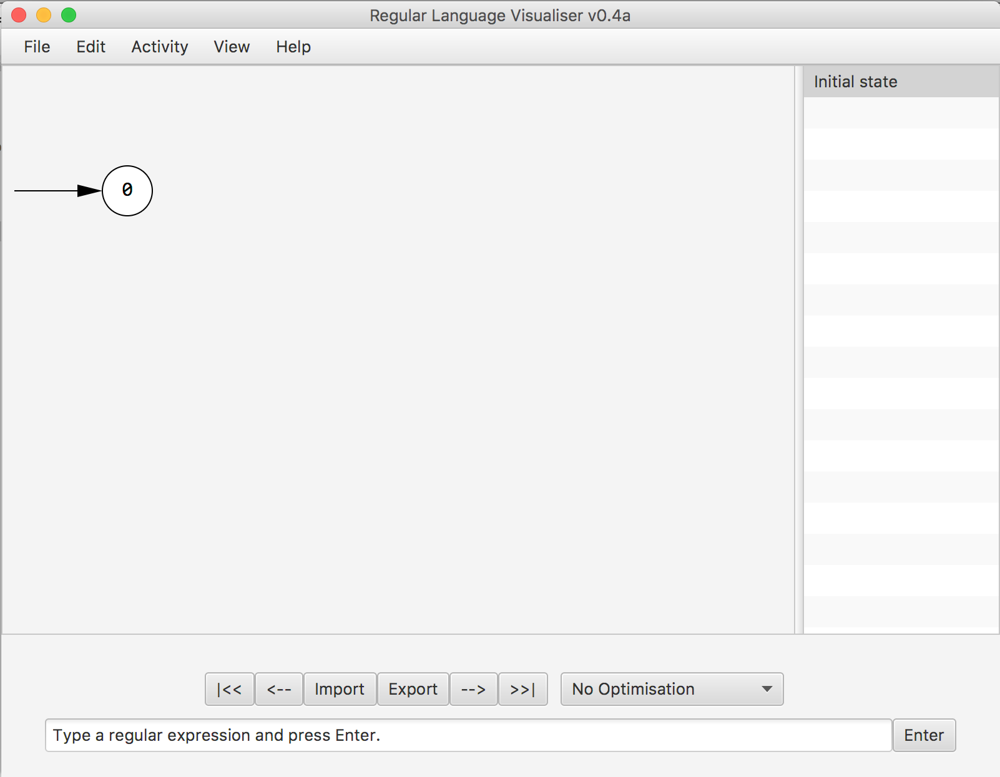
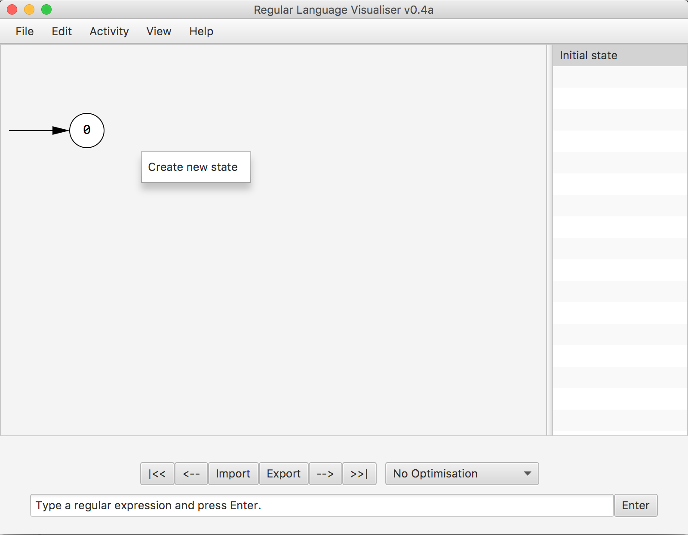
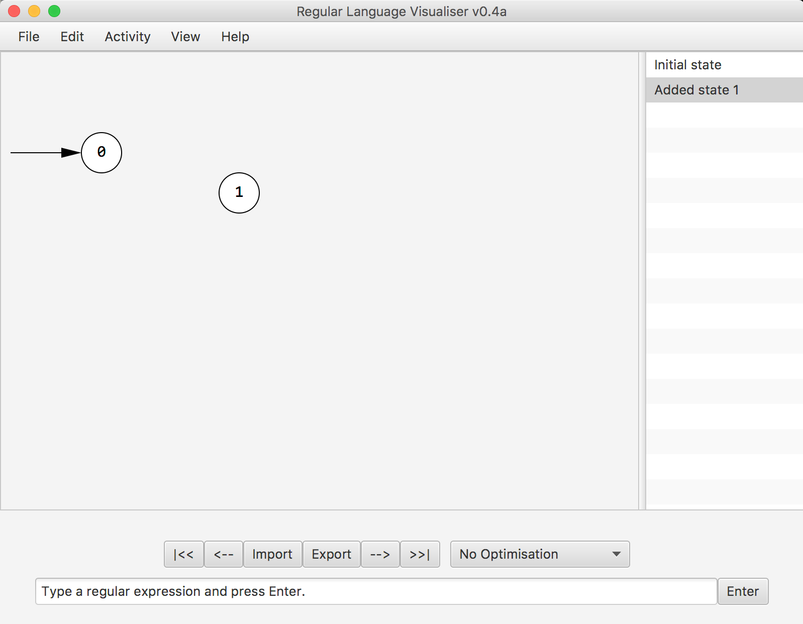
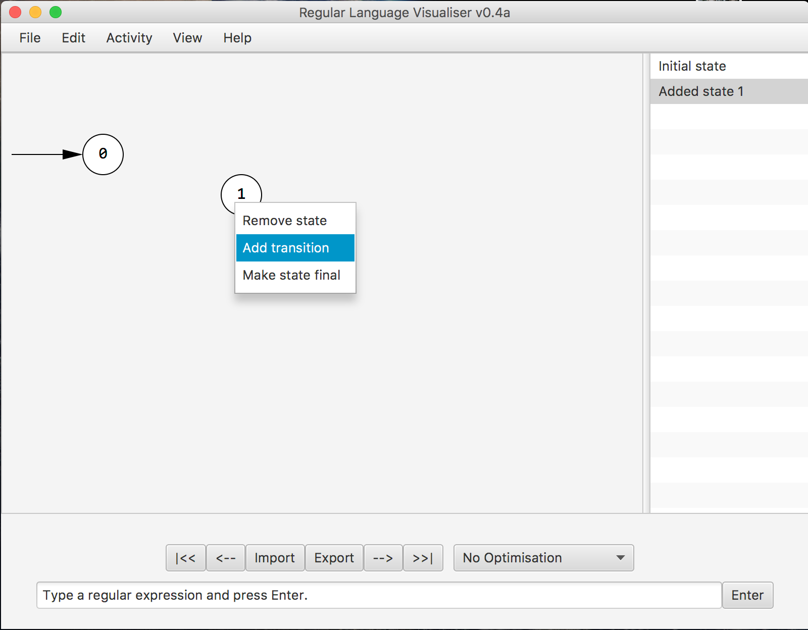
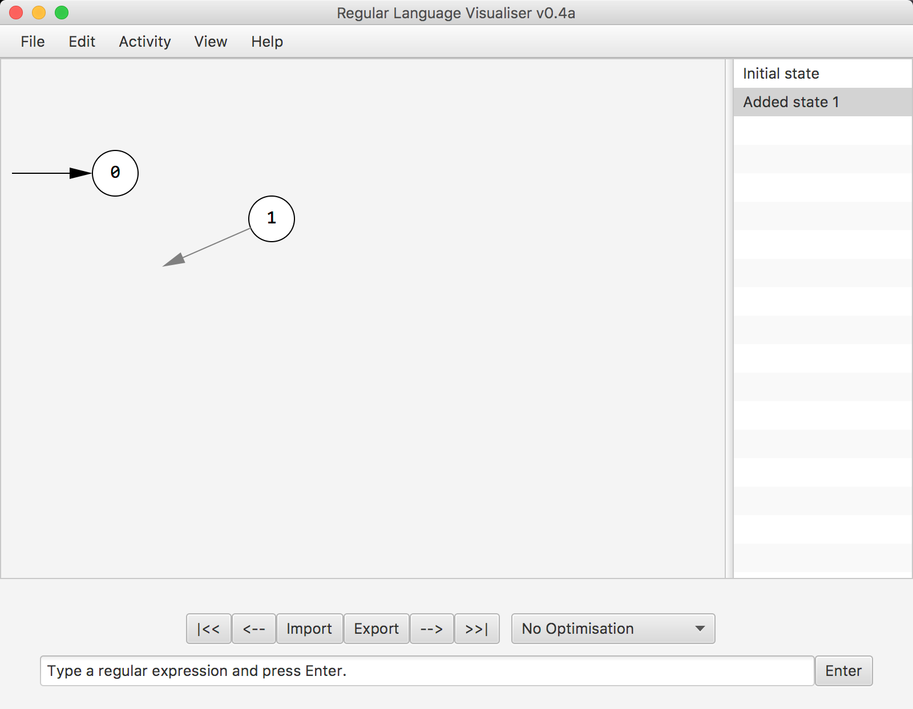
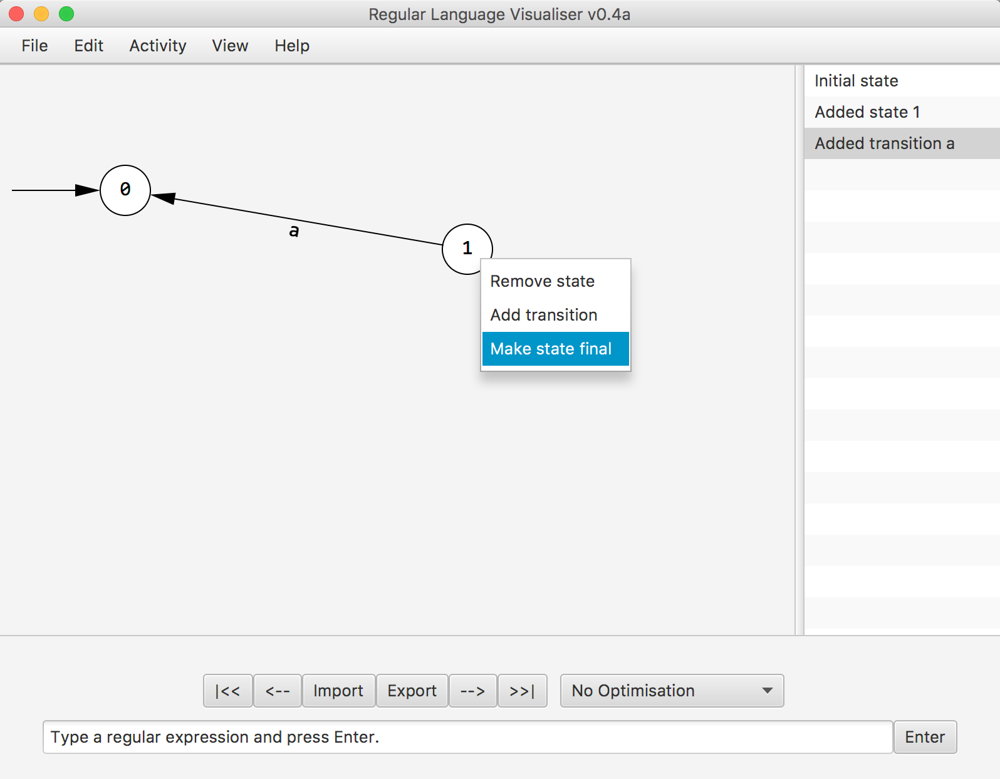
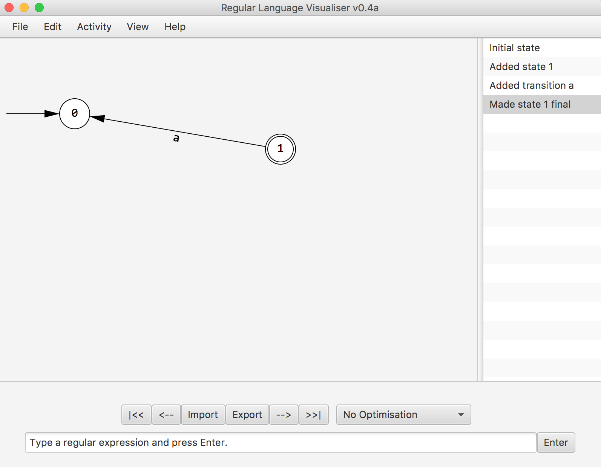
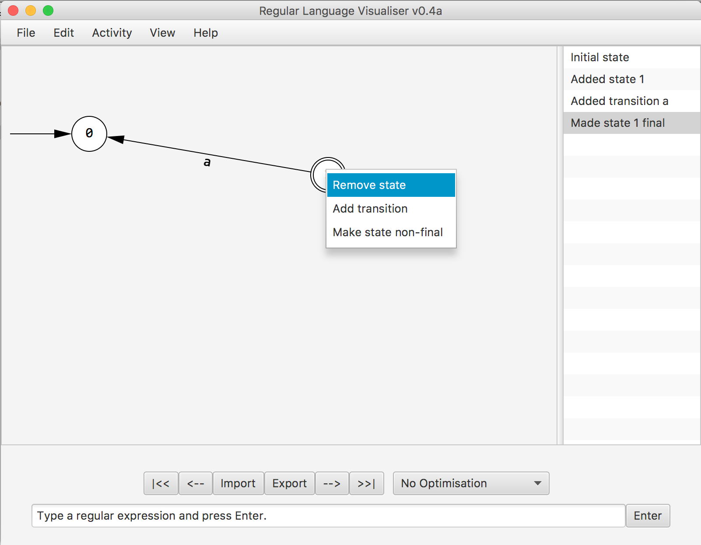
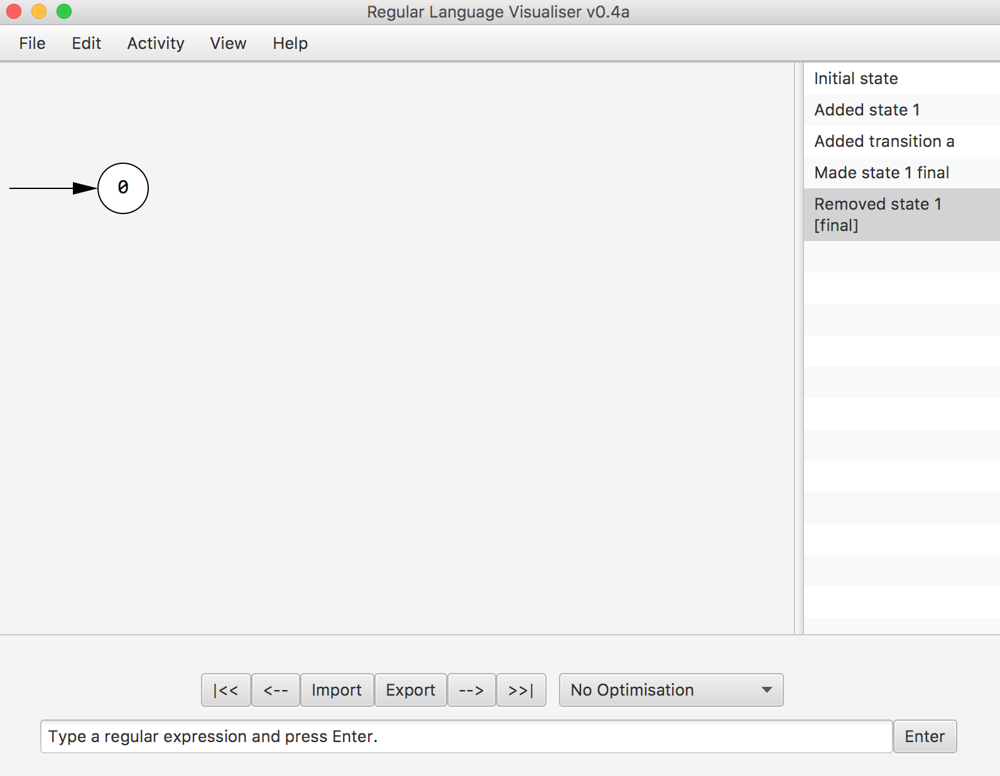

STEP 2. The starting node will appear on the canvas.

STEP 3. Right click anywhere on the canvas to create a new state.  
STEP 4. Then right click on a state to create a transition, a faded arrow/transition will appear, click on the corresponding state to add transition. Afterwards you can label the transition, to create a epsilon transition enter '%' into the pop-up window.


STEP 3c. Right clicking on a state will allow you to make it a final state, and right clicking on a final state allows you make it a state non-final.


STEP 3d. Finally right clicking on state will also allow you remove it.

